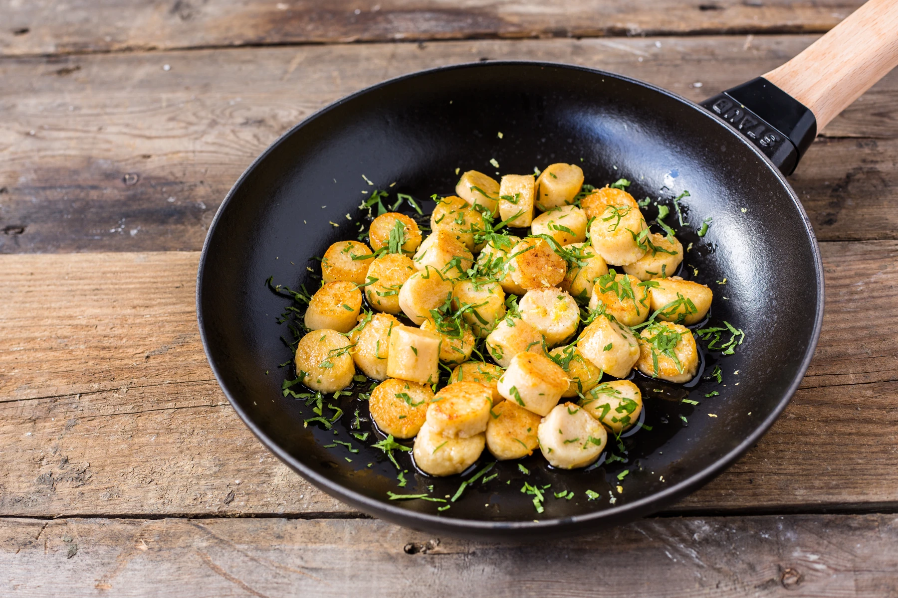
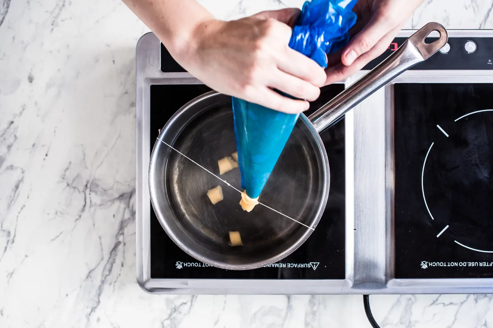

Home
Gnocchi Parisienne

Description
This gnocchi Parisienne recipe is flavoured with lemon, butter and parsley for a light and delicate finish. This French version of gnocchi uses choux pastry as a base, and is very simple to pull off at home.
Ingredients
- 110g of butter
- 230ml of water
- 3 eggs
- 50g of Parmesan, grated finely
- 155g of flour
To Serve
- 1 knob of butter
- 1/4 lemon
- 1 handful of flat leaf parsley, leaves picked and finely chopped
Equipment
Method:
- Place the water and butter in a pan with a pinch of salt and set over a heat until the butter has melted
- Remove the pan from the heat then add the flour and cheese. Beat vigorously to form a dough
- Once the mixture has cooled slightly, then beat in the eggs. Transfer the mixture to a piping bag
- Bring a pan of salted water to the boil and attach a taught string across the diameter of the pan using sellotape. If you don't have any tape to hand, you can dip sharp scissors into the hot water and snip length of the gnocchi off, wetting the scissors between each snip
- Snip the end of the piping bag and pipe out the mixture, dragging it over the string to create separate gnocchi shapes

- Work in batches so as to not overcrowd the pan. Once they float to the surface, remove using a slotted spoon and transfer to either a bowl of iced water, or a hot pan to crisp up if you’re eating straight away. Be careful not to overcook them, or they will turn mushy
- If eating straight away, add a knob of butter to a hot pan and allow to foam. Add the gnocchi to the pan and allow to crisp up. Squeeze over a little lemon juice, add a handful of chopped parsley and stir to coat the gnocchi in the sauce. Serve immediately